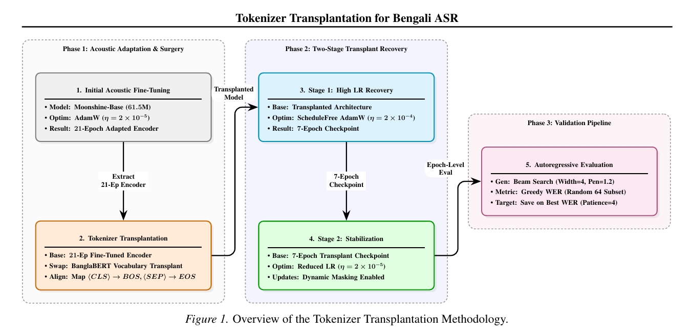
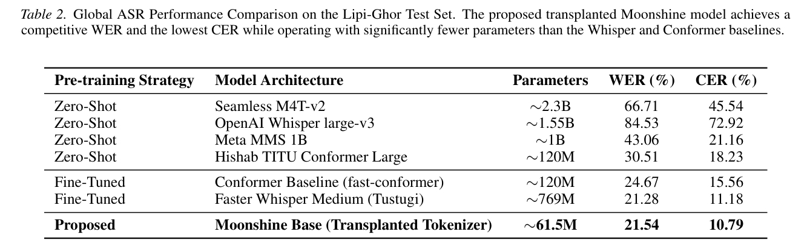
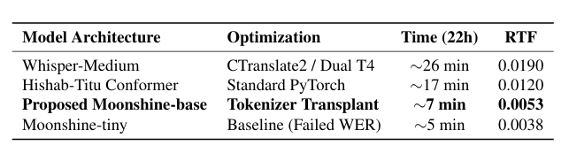

Lightweight speech recognition models are critical for edge deployment, yet highly optimized architectures like Moonshine often fail on morphologically rich, non-Latin languages such as Bengali. This study identifies the root cause of this failure as the model's English-centric byte-level tokenizer, which fragments Bengali words into high-fertility byte chains and triggers catastrophic autoregressive collapse during inference.
To resolve this, a novel vocabulary transplantation pipeline is proposed to replace the decoder vocabulary with the native-script BanglaBERT WordPiece vocabulary and resize the corresponding token embedding matrix. Experimental results demonstrate a reduction in token fertility from 9.16 to 1.30. By decreasing autoregressive sequence length by 85.8%, decoding instability is entirely mitigated. When evaluated on the 882-hour Lipi-Ghor dataset, the modified architecture achieves a competitive 21.54% Word Error Rate (WER) and a Real-Time Factor (RTF) of 0.0053.
Rather than training a model from scratch or replacing the vocabulary before fine-tuning—which often leads to catastrophic forgetting—our approach explicitly decouples acoustic representation learning from autoregressive language modeling.

Figure 1. Overview of the Tokenizer Transplantation Methodology.
Experiments utilize the Lipi-Ghor-882 dataset, an 882-hour multi-speaker Bengali corpus curated from diverse open-source media, featuring aggressive filtering via Voice Activity Detection (VAD).
.png)
The proposed transplanted Moonshine model achieves a competitive WER and the lowest CER while operating with significantly fewer parameters than the Whisper and Conformer baselines.

Furthermore, while standard architectures required heavily engineered pipelines to achieve real-time factors (RTF) of ~0.019, the proposed architecture achieves a blistering RTF of 0.0053 natively.

@inproceedings{hasan2026tokenizer,
title = {Tokenizer Transplantation: Mitigating Autoregressive Collapse in Edge-Efficient Bengali ASR},
author = {Hasan, Sanjid and Rahman, Md. Abdur},
booktitle = {Proceedings of the 43rd International Conference on Machine Learning (ICML) - MuslimML Workshop},
year = {2026}
}